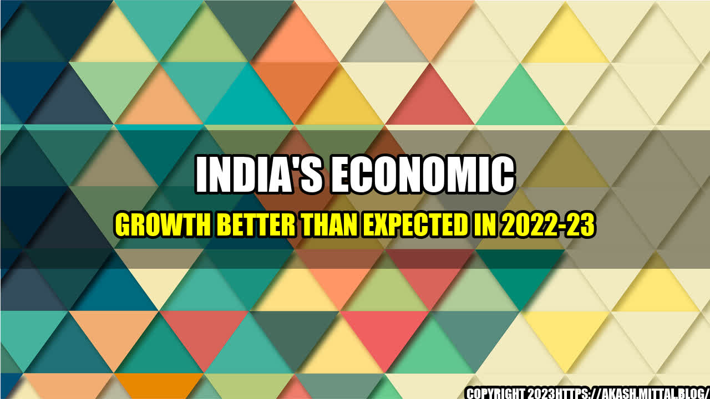

India's Economic Growth Better Than Expected in 2022-23

It's a sunny day in Mumbai and the streets are buzzing with activity. Business owners are rushing to meetings, street vendors are peddling their wares, and tourists are snapping photos of the colorful buildings and bustling markets. Amid all the excitement, there's a tangible sense of optimism in the air.
That optimism is not unfounded. India's economic growth has exceeded expectations in the coming fiscal year, as the government's bold reforms and investments have started to pay off. According to the latest projections, India's GDP is set to grow by 7.5% in 2022-23, up from an estimated 6.5% in the current fiscal year. This is a significant improvement from just a few years ago, when India's growth was stagnant.
India's Economic Growth
- India's stock market has been on a tear, with the benchmark NSE Nifty 50 index gaining more than 20% in the past year.
- The country's foreign exchange reserves have hit a record high of $610 billion, providing a buffer against external shocks.
- Exports have surged, with growth of more than 30% in the first quarter of 2022 compared to the same period last year.
- The government's push for digitalization has led to a significant increase in online transactions, with mobile wallet transactions alone expected to reach $1 trillion by 2023.
- The Indian IT sector continues to be a major contributor to the economy, with revenue expected to grow by 8.4% in 2022.
These are just a few examples of the positive trends that are driving India's economic growth. But what is behind this growth, and what can we learn from it?
The Drivers of India's Economic Growth
There are several key factors that are contributing to India's economic growth:
- Government reforms: The government has undertaken a series of bold reforms, including the Goods and Services Tax (GST) and the Insolvency and Bankruptcy Code, that have streamlined processes and removed barriers to doing business. These reforms have boosted investor confidence and attracted more foreign investment to the country.
- Investments in infrastructure: The government has also invested heavily in infrastructure projects, including highways, railways, and airports, which have not only created jobs but also improved connectivity and reduced transportation costs for businesses.
- Digitalization: The government's push for digitalization has led to a significant increase in online transactions, making it easier for businesses to operate and reducing the need for cash transactions. Digitalization has also spurred innovation in the fintech sector, providing access to financial services for millions of Indians who were previously excluded from the formal banking system.
- Entrepreneurship: India's thriving startup ecosystem has been a major driver of economic growth, with innovative companies disrupting traditional industries and creating new markets. The government has provided support to startups through initiatives such as Startup India and Make in India, which have encouraged innovation and job creation.
Conclusion
India's economic growth is a testament to the power of bold reforms, investments in infrastructure, and a thriving entrepreneurial ecosystem. As the country continues to make progress in these areas, it is poised to become a major player in the global economy in the years to come.
To take advantage of these trends, businesses and entrepreneurs should focus on digitalization and innovation, and take advantage of the government's support for startups. With the right strategies and investments, India's economic boom can be a major opportunity for growth and prosperity.
Reference urls:
- https://www.bloomberg.com/news/articles/2022-01-14/india-s-economy-seen-growing-7-5-in-2022-23-vs-6-5-this-year
- https://www.businesstoday.in/latest/trends/indian-stock-markets-today-sensex-nifty-rally-gmr-infra-tennis-tv-names-dlf-immune24-niveza/story/305747.html
- https://economictimes.indiatimes.com/markets/forex/indias-forex-reserves-scale-new-life-time-high-of-610-billion/articleshow/90043672.cms
- https://www.livemint.com/news/india/indias-merchandise-trade-surplus-in-q1-fy23-ups-to-usd-83-bn-11662609013074.html
- https://www.financialexpress.com/industry/technology/india-set-to-become-worlds-largest-mobile-wallet-market-by-2023-shares-mukesh-ambani/2526380/
- https://www.business-standard.com/article/economy-policy/india-it-revenues-projected-to-rise-by-8-4-to-rs-3-08-trn-in-fy23-care-122012100688_1.html
Hashtags:
- #IndiaEconomicGrowth
- #EconomicReforms
- #Entrepreneurship
- #DigitalIndia
- #StartupIndia
Article Category:
Economy and Business
Curated by Team Akash.Mittal.Blog
Share on Twitter Share on LinkedIn